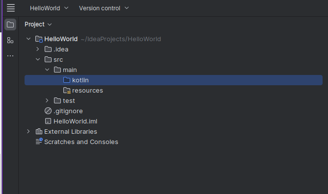

Lab 2: Introduction to Kotlin
Important
- You will be using IntelliJ IDE
- From your Start Menu type 'IntelliJ' and select run!
- If you want to run this on your own machine you can download the community Edition from here -> https://www.jetbrains.com/idea/download/?section=windows
1. Getting Started
-
Once opened you will be greeted witht he landning page:

-
Select New Project
-
Modify the Name to HelloWorld
-
Change Language to Kotlin
-
Uncheck Add sample code
-
Click Create

-
-
Once loaded (can take a few minutes) you will see the following project structure:

- Adding a Kotlin Class file
- Right click the highlighted Kotlin folder in previous image
- Once the context menu opens click 'New' and then Kotlin Class/file
- Create a new File file called
Main

-
Now we can populate our new
Main.ktfile with some code.NOTE
.ktis the extension for Kotlin files- Write the following:
fun main(args: Array<String>) { println("Hello World!") }funis a hard keyword that tells the Kotlin you are declaring a function.main()is the function name, and any console based program like this,main(), is the entry point of the program when it is exectued by the OS.(args: Array<String>), is the way of telling the program that it can take in arugments supplied to it, in this instanceargs, the variable, will be anArrayofStrings- Everything between the
{}braces is excuted by the program. - Lastly,
println("Hello World!"), calls the functionprintln()which prints whatever is in the brackets to the terminal with a\nnew line at the end henece thelninprintln. - Now you can run the program using the either of the green arrows:


- You should see a terminal appear about the bottom of the IDE that shows some output.

-
Now you are going to modify the programme so that
printl()to take a variable- Create a immutable variable called
namefun main(args: Array<String>) { var name : String = "Your Name" println("Hello World! " + name) }
- Create a immutable variable called
-
Run and you should see the following output

-
Notice the green underwave underneath the
println("Hello World! " + name)
Note: Code Inspections
- Green = typo, literals, weak warnings
- Red = Error (will not compile)
You can find more if you go to File>Settings>Editor>Color Scheme > General > Errors and Warnings
- This underwave can be corrected two ways, either hover over and follow the quick key short cut 'Alt+Shift+Enter'. Or Manually fix it by reproducing the output below.

- You will see the that
println("Hello World! " + name)has been refactored to:

Notes
- String literals may contain template expressions – pieces of code that are evaluated and whose results are concatenated into the string.
- A template expression starts with a dollar sign
$and consists of either a name- or an expression in curly braces:
val s = "Hello World"
println("$s.length is ${s.length}") // Prints "Hello World.length is 11"
-
Run the program again, do you get the same ouput?
-
Modify further with
print()function

Note:
print()by default does not terminate with a new line (\n) line character, unlikeprintln()- however, you can tell it to, by adding a
\nto the end of the message inbetweent the two brackets.
- Run it and see for yourself, then remove the
\nfrom the end ofprint("Hello me\n), is it the same?
2 Mutable and immutable
-
varis like general variable and it's known as a mutable variable in kotlin and can be assigned multiple times. -
valis like final variable and it's known as immutable in kotlin and can be initialised only a single time.
Note
- The term mutable comes from mutation, as is to mutate, to change. In computing this means Read & Write
- Therefore immutable is something that can not mutate nor change. In comupting this means Read only
- Since you started we have been using
varto define the variablename, this is technically incorrect, because we never change the value after declaration. - Let's change this to
valto make our code more clean. - Reproduce the following:
fun main(args: Array<String>) {
val a: Int = 4
val b: Int = 4
var c: Int = 0
print("$c = $a + $b")
}
-
Before running to code, predict what the outcome will be? Now run it, does it match your prediction?
Answer
0 = 4 + 4- This is because no mathemcatical operation is performed inside a String concatenation
-
Modify the above code so that it looks like this:
fun main(args: Array<String>) {
val a: Int = 4
val b: Int = 4
var c: Int = 0
c = a + b
print("$c = $a + $b")i
}
-
Before running to code, predict what the outcome will be? Now run it, does it match your prediction?
Answer
8 = 4 + 4- This is because the mathemcatical operation is performed outside a String concatenation, and the result of
a + bis saved toc
- This is because the mathemcatical operation is performed outside a String concatenation, and the result of
-
Now let's change the how
cis declared, modifycso thatvaris nowval:val c: Int = 0 -
Before running to code, predict what the outcome will be? Now run it, does it match your prediction?
Answer
- You can't, notice the red underwave, this is an error, because
cis immutable now. - it is important to read the Problems tab at the bottom of the IDE.

- Change it back to
var. - We are not going to worry about the warnings for now, will come back to that later.
- You can't, notice the red underwave, this is an error, because
3. Data types
- Remember from the lecture that data types are as follows:
- Numbers (six built-in types)
- Byte [ \(-127\) to \(128\) ]
- Short [ \(-32768\) to \(32767\) ]
- Int [ \(-2^{31}\) to \(2^{31}-1\) ]
- Long [ \(-2^{63}\) to \(2^{63}-1\) ]
- Float [ \(2^{32}\) ]
- Double [ \(2^{64}\) ]
- Characters
- Chars [ \(2^{16}\) ]
- because unicode instead of just ASCII
\u0000,\uFFFF
- Chars [ \(2^{16}\) ]
- Booleans
- true
- false
- All though 1 bit (1,0), it is technically a Byte due.
- Arrays
- get
- set
- size
- length
- etc...
- Strings
- A class, not techincally a data type
-
Lets check the maximum and miniumum values avaialable to you on your machine or VM
- Start your program off as follows and run:
fun main(args: Array<String>) { val b1: Byte = Byte.MIN_VALUE val b2: Byte = Byte.MAX_VALUE println("Smallest signed byte value: " +b1) println("Largest signed byte value: " +b2) val ub1: UByte = UByte.MIN_VALUE val ub2: UByte = UByte.MAX_VALUE println("Smallest unsigned byte value: " +ub1) println("Largest unsigned byte value: " +ub2) println("--------------------------------------------------") }Output

- Now repeat for each data type, remembering to inculde signed and unsigned variants:
-
Short-Char-Int-Long-Float-Double
Notes
Charwill need to be cast as anIntFloatandDoublecan only be signed- eg.
val someVal: dataTypeYouWant = originalDataType
Whole code, do it yourself first
fun main(args: Array<String>) { val b1: Byte = Byte.MIN_VALUE val b2: Byte = Byte.MAX_VALUE println("Smallest signed byte value: " +b1) println("Largest signed byte value: " +b2) val ub1: UByte = UByte.MIN_VALUE val ub2: UByte = UByte.MAX_VALUE println("Smallest unsigned byte value: " +ub1) println("Largest unsigned byte value: " +ub2) println("--------------------------------------------------") val s1: Short = Short.MIN_VALUE val s2: Short = Short.MAX_VALUE println("Smallest signed short value: " +s1) println("Largest signed short value: " +s2) val us1: UShort = UShort.MIN_VALUE val us2: UShort = UShort.MAX_VALUE println("Smallest unsigned short value: " +us1) println("Largest unsigned short value: " +us2) println("--------------------------------------------------") val c1: Int = Char.MIN_VALUE.code val c2: Int = Char.MAX_VALUE.code println("Smallest Char value: " + c1) println("Largest Char value: " + c2) println("--------------------------------------------------") val i1: Int = Int.MIN_VALUE val i2: Int = Int.MAX_VALUE println("Smallest signed integer value: " +i1) println("Largest signed integer value: " +i2) val ui1: UInt = UInt.MIN_VALUE val ui2: UInt = UInt.MAX_VALUE println("Smallest unsigned integer value: " +ui1) println("Largest unsigned integer value: " +ui2) println("--------------------------------------------------") val l1: Long = Long.MIN_VALUE val l2: Long = Long.MAX_VALUE println("Smallest signed long integer value: " +l1) println("Largest signed long integer value: " +l2) val ul1: ULong = ULong.MIN_VALUE val ul2: ULong = ULong.MAX_VALUE println("Smallest unsigned long integer value: " +ul1) println("Largest unsigned long integer value: " +ul2) println("--------------------------------------------------") val F1: Float = Float.MIN_VALUE val F2: Float = Float.MAX_VALUE println("Smallest Float value: " +F1) println("Largest Float value: " + F2) val D1: Double = Double.MIN_VALUE val D2: Double = Double.MAX_VALUE println("Smallest Double value: " + D1) println("Largest Double value: " + D2) }-
When done, you should get the same output as below:
Output
Smallest signed byte value: -128 Largest signed byte value: 127 Smallest unsigned byte value: 0 Largest unsigned byte value: 255 -------------------------------------------------- Smallest signed short value: -32768 Largest signed short value: 32767 Smallest unsigned short value: 0 Largest unsigned short value: 65535 -------------------------------------------------- Smallest Char value: 0 Largest Char value: 65535 -------------------------------------------------- Smallest signed integer value: -2147483648 Largest signed integer value: 2147483647 Smallest unsigned integer value: 0 Largest unsigned integer value: 4294967295 -------------------------------------------------- Smallest signed long integer value: -9223372036854775808 Largest signed long integer value: 9223372036854775807 Smallest unsigned long integer value: 0 Largest unsigned long integer value: 18446744073709551615 -------------------------------------------------- Smallest Float value: 1.4E-45 Largest Float value: 3.4028235E38 Smallest Double value: 4.9E-324 Largest Double value: 1.7976931348623157E308 Process finished with exit code 0
-
Arrays
- You can have an array of any data type
- They are stored in contiguous memory locations.
- They can be accessed programmatically through their indexes (array[1], array[0], etc.)
- They are mutable (
val). - Their size is fixed.
Notes:
val num = arrayOf(1, 2, 3, 4) //implicit type declaration
val num = arrayOf<Int>(1, 2, 3) //explicit type declaration
val sentence = String: "This is a sentence." // Strings are an array of characters
Reproduce the following to experiment with the various iterations of array manipulation:
1 var sentence :String = "This is a sentence"
2
3 for (i in 0 ..< sentence.length)
4 {
5 print(" "+sentence[i])
6 }
The for is a keyword that enables the iteration through anything that provides an iterator. Here the iterator is the i a variable that iterates through a supplied list, collection, enumerable or objects.
Note
- A reminder that a
Stringis a sequence or an array of characters.
After the opening bracket ( i the next keyword is in and is consider an operator, here in is to used to iterate over the the length of sentence excuting the print(..) method, until i is less than, <, the length.
The output should look something like:
T h i s a s e n t e n e c e
Notice the white spacing between each letter and the extra white space between the words.
Another way to write the for loop:
1 var sentence :String = "This is a sentence"
2
3 for (element in sentence)
4 {
5 print(" "+ element)
6 }
A slight difference here is that instead of iterating using an iterator with an integer to the a specified length we iterate over all elements of the object or list. The use of the the word element is not reserved, and you could replace this with anything that makes sense, as long as it is not another keyword:
1 var sentence :String = "This is a sentence"
2
3 for (characters in sentence)
4 {
5 print(" "+ characters)
6 }
Run this code either way and you should still recieve the same output as before:
T h i s a s e n t e n e c e
An array can be defined, explicitly or implictly by doing the following:
// declaring an array using arrayOf<Int> this is explicit
val explicitArray = arrayOf<Int>(10, 20, 30, 40, 50)
val implicitArray = arrayOf(10, 20, 30, 40, 50)
Another way to iterate over the array is to do the following:
for (i in 0.rangeTo(explicitArray.size-1))
{
print(" "+explicitArray[i])
}
Notice anything different to before?
0.rangeTo(...)- This is technically an operator function, where the preceeding number
0can be any number less than the range provided in the arguments to the function. explicitArray.size, wheresizeis a attribute of the array, much likelengthwas tosentenceearlier. We minus 1 from the size because arrays are 0 indexed. Meaning that while there are 5 indices in theexplicitArrayit starts at at index 0 and goes to 4, which is a total of 5.- modifiy the code and run it again to see why we need to subtract 1.
-
for (i in 0.rangeTo(explicitArray.size)) { print(" "+explicitArray[i]) }